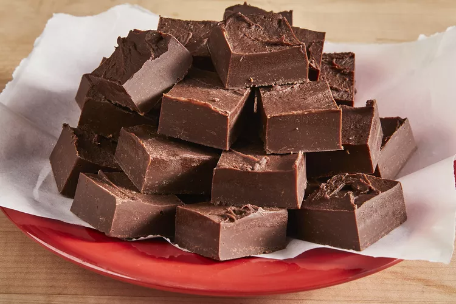

Fudge

This top-rated fudge recipe is unbelievably easy to make with just three ingredients and five minutes of prep
time!
Fudge is a type of homemade candy with a smooth and creamy texture. It's usually made on the stove with sugar,
butter, and milk. There are many varieties of fudge, but the most popular type is chocolate.
This simplified version comes together quickly in the microwave with just chocolate chips, sweetened condensed
milk, and butter.
Ingredients:
- Chocolate Chips
- Sweetened Condensed Milk
- Butter
- Chopped Walnuts
Directions:
- Line an 8-inch square baking dish with foil or parchment paper. Leave a bit of an overhang to make removing the
fudge easier later on.
- Add the sweetened condensed milk, butter, and chocolate chips to a saucepan. Stir often over medium heat until
the mixture is fully melted and smooth.
- Remove the fudge mixture from the stove and stir in any chopped nuts or dried fruit you wish to use.
- Spread the melted fudge into an even layer in your prepared baking dish. Refrigerate it until fully set; this
will take about 3 hours.
Back to the Top
Return to Main Page